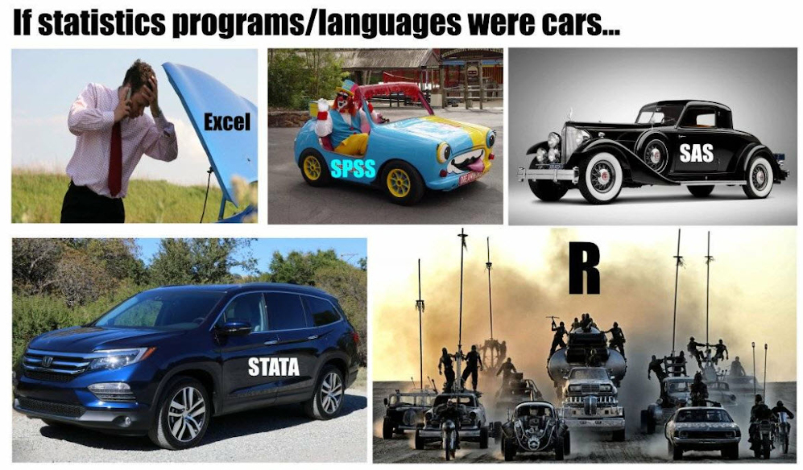
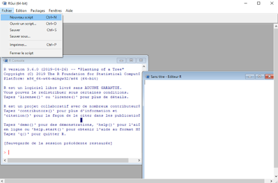
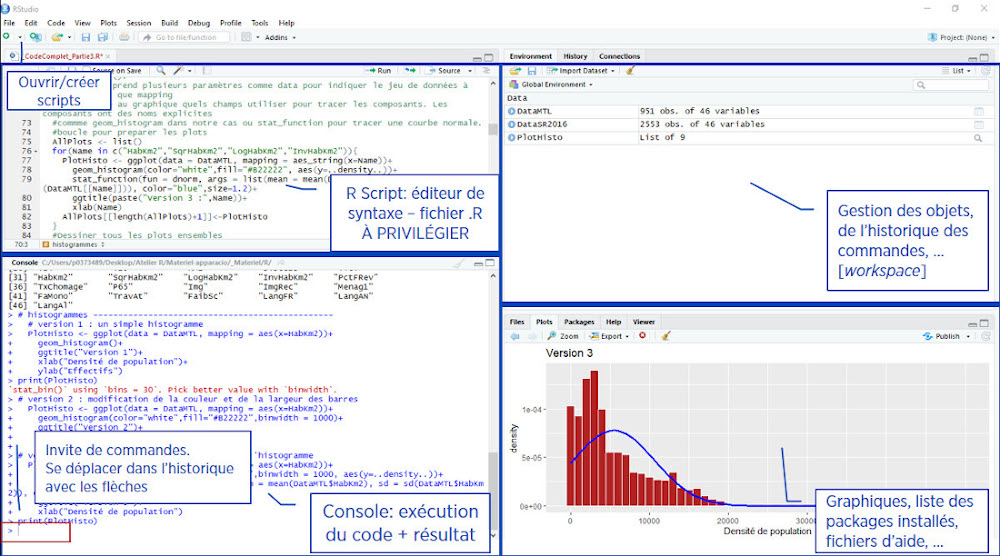
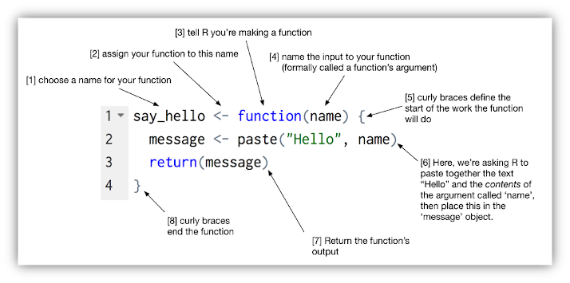
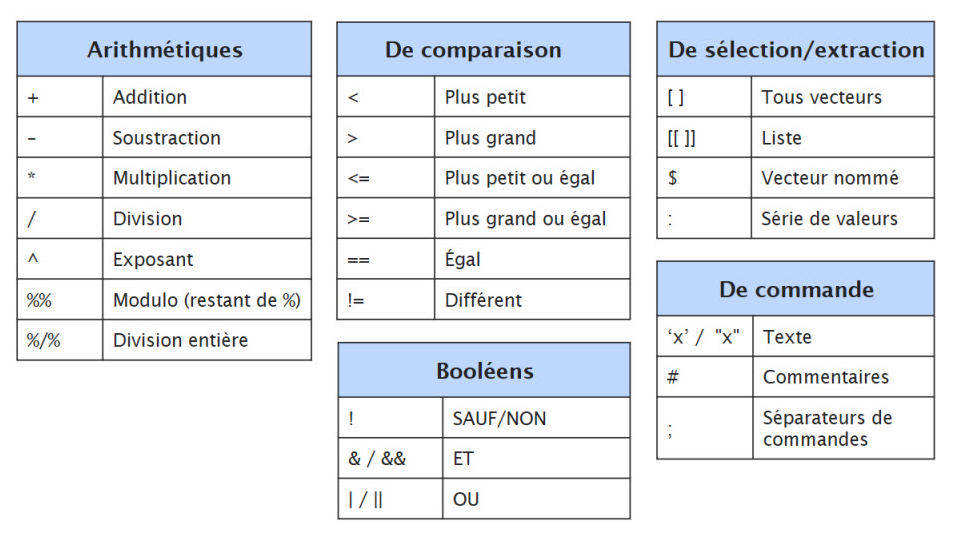
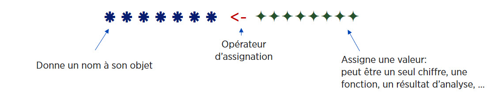
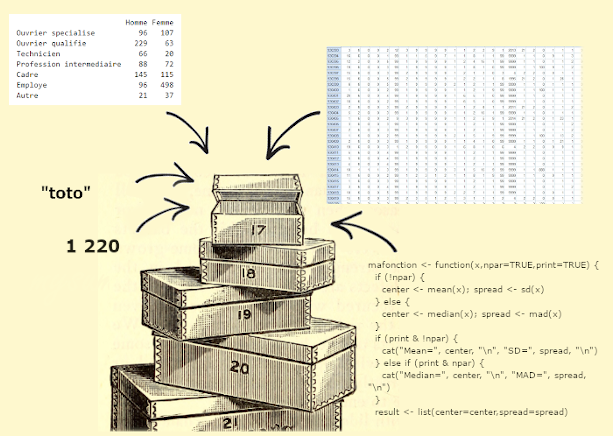
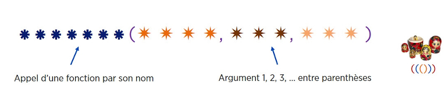
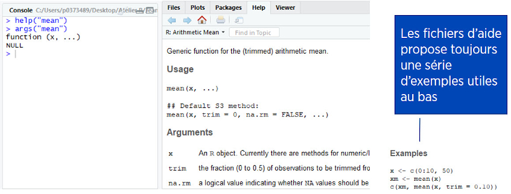
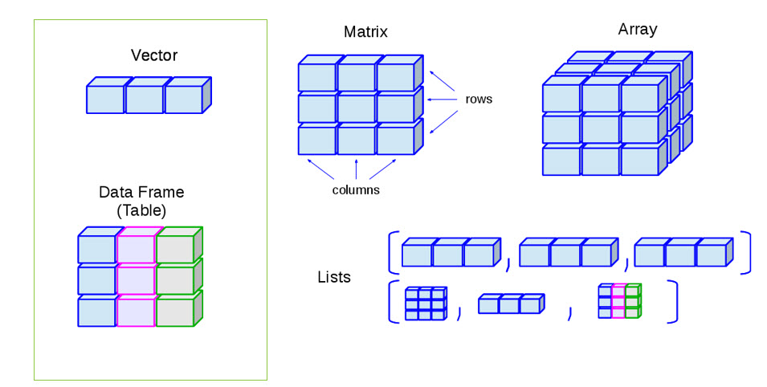

Webinaire
Intro à RStudio et au langage R
Caroline Patenaude
Bibliothèque des lettres et sciences humaines
2021-02-12
Objectifs
- Maitriser l’environnement de RStudio.
- S’initier à la grammaire de base du langage R.
- Définir et manipuler différents types d’objets avec des opérateurs.
- Importer et explorer un jeu de données.
- Comprendre le fonctionnement et l’utilisation de fonctions élémentaires et de leurs arguments.
- Utilisation de la base de données hdv2003 (INSEE) du package questionr
1. Pourquoi R?
Langage et interface de programmation libres et gratuits pour l’analyse statistique et graphique (etc.).
Multiplateforme : Windows, Mac, Linux.
Très fort pour les graphiques et visualisations de toutes sortes.
Communauté très active donc développement constant = rapidité de l’implémentation de nouvelles méthodes (non disponibles dans les logiciels commerciaux).
Pour tous les types d’analyses (modèles linéaires, multi-niveaux, analyses factorielles, équation structurelle, simulations, psychométrie, économétrie, génomique…).
Utilisation de scripts assure la reproductibilité des analyses.
Très efficace pour la création de présentations et de rapports (
Rmarkdown,knitr,LaTeX).Excellente intégration avec de nombreux systèmes de bases de données, autres langages et outils comme Colab ou Jupyter notebook (en association avec Python).
1. Pourquoi R?

2. Quelques bémols
Plus un langage de programmation qu’un logiciel.
Ne manipule pas directement les données comme SPSS ou excel, les fichiers de données sont des objets en mémoire.
L’affichage des résultats est assez minimaliste.
Prolifération des fonctions (packages) peut alourdir l’apprentissage.
Développement rapide fait que la documentation laisse parfois à désirer.
Contient généralement de l’aide pour toutes les fonctions mais pas toujours facile à comprendre.
Comme pour tout language de programmation, un “rien” peut faire en sorte que le code plante.
Bref, complexe mais TRÈS puissant!
2. Quelques bémols
Stratégie d’attaque
Choisir ses combats (on n’apprend pas R, on apprend ce que l’on a à faire dans R)
Savoir trouver des réponses à ses questions
3. R, RStudio et autres interfaces
- Interface du R de base pas très intuitive donc peu utilisée telle quelle

Installe généralement en plus un IDE, Integrated Development Environment: éditeur de script - environnement beaucoup plus convivial qui facilite le travail (gestion des fichiers, objets et commandes, historique de fonctions, autocomplétion,…).
L’IDE le plus utilisé est RStudio (mais il y en a d’autres comme Tinn-R).
Les commandes et fonctions sont les mêmes pour R et RStudio.
4. Installation
Télécharger et installer R de base - choisir son système d’exploitation et suivre les étapes.
Télécharger et installer RStudio (ou autre interface) – Choisir la version gratuite et son système d’exploitation.
Télécharger et installer (“charger”) des packages dans RStudio.
- À noter
- Pas de mises à jour automatiques, il faut installer une nouvelle version et retélécharger les packages (ou déplacer le répertoire de l’ancienne version et faire
update.packages). RStudio utilisera par défaut la version la plus récente sur le poste (peut se faire manuellement). L’ancienne version peut être désinstallée. Il est recommandé de mettre à jour sa version R et RStudio annuellement. - Certains besoins plus spécialisés peuvent nécessiter l’installation d’outils supplémentaires comme RTools (Windows) et LaTeX.
- Pas de mises à jour automatiques, il faut installer une nouvelle version et retélécharger les packages (ou déplacer le répertoire de l’ancienne version et faire
5. Qu’est-ce qu’un package?
Un package est un module (ou extension, librairie, bibliothèque) qui contient un ensemble de fonctions (souvent liées à une méthode ou un domaine particulier).
À l’installation, R vient avec un ensemble de fonctions de base {base} et de modules par défaut (built in packages).
Des packages composés de fonctions spécialisées sont constamment développés par la communauté.
On en trouve plus de 15 000 sur le site officiel de R CRAN. D’autres se trouvent aussi ailleurs (Github, …).
Les packages doivent être téléchargés une seule fois, mais chargés à chaque session.
5. Qu’est-ce qu’un package? (suite)
Il y a toujours plusieurs façons d’arriver au même résultat -> normal et nécessaire de se limiter à certaines fonctions.
Les modules sont généralement évalués par les pairs - Journal of Statistical Software – le choix doit se faire avec précautions.
Comment les trouver et les choisir? En cherchant sur Google! En s’informant dans son domaine et en vérifiant si les packages ont déjà été utilisés dans des publications.
Certains packages ont des façons spécifiques de fonctionner. Ils utilisent une syntaxe et des formats qui se distinguent de la syntaxe commune de R.
6. Tidyverse

- Ensemble de packages très utilisé spécialisé dans l’analyse, la manipulation et la visualisation de données -> repose sur le principe de tidy data.
- Les packages Tidyverse partagent une syntaxe commune et des “verbes” et opérateurs spécifiques (ex: %>%).
- Travaillent avec un format de jeu de données particulier (tibble) – variation sur le dataframe.
- La commande
install.packages("tidyverse")va télécharger toutes les extensions constituants le cœur de tidyverse. La fonction library(tidyverse) les chargera (Certains autres modules doivent être chargés individuellement) :- dplyr (manipulation des données)
- tidyr (remise en forme des données)
- purrr (programmation)
- readr (importation de données)
- tibble (tableaux de données)
- forcats (variables qualitatives)
- stringr (chaînes de caractères)
- ggplot2 (visualisation)
- Voir R for data science de Grolemund & Wickham
7. Interface RStudio

- À noter:
- On ne peut conserver l’historique complet à partir de la console, donc il est préférable de travailler à partir d’un script.
- l’invite de commande se transforme parfois en +, R considère alors que la ligne de commande n’est pas complète. Pour en sortir, taper sur esc.
7. Interface RStudio (suite)
Raccourcis pratiques
Éditeur de script:
- Ctrl + Entrée est votre meilleur ami! : exécute code dans le script ligne par ligne.
- Ctrl + 2: déplace curseur dans la console.
Console:
- Ctrl + 1 : déplace le curseur dans l’éditeur.
- Ctrl + L : vide la console
- Flèche vers le haut et bas du clavier: historique des commandes précédentes.
Onglet History du quadrant haut-droite: consulter et relancer commandes.
Autocomplétion: Tab dans le nom d’une fonction. Aussi pour noms d’objets.
Nombreux autres raccourcis sous les onglets View, Edit et Code
8. Les projets et autres fichiers dans RStudio
Créer un projet: menu File puis sélectionner New project.
Un projet permet d’organiser son travail et de faciliter l’accès à un ensemble de fichiers (données, scripts, documentation, graphiques…) organisés dans des dossiers/sous-dossiers.
Un projet RStudio est associé à un répertoire de travail R: on peut créer un nouveau dossier ou créer un projet à partir d’un dossier existant - Working Directory.
R va créer dans ce dossier un fichier .Rproj. Ce fichier sera ensuite automatiquement chargé dans RStudio à l’ouverture entrainant la définition du dossier de travail, le chargement du fichier .Rdata (image contenant les objets), le chargement de l’historique et l’ouverture des scripts ouverts à la dernière session.
Plusieurs projets peuvent être ouverts en même temps.
Les options générales et de projets de RStudio peuvent être modifiées sous Tools > Global Options… et Tools > Project options.
Même si l’on ne travaille pas dans le cadre d’un “projet”, R demandera à la fermeture si l’on veut enregistrer ce qui se trouve dans son environnement. Si oui, les objets seront enregistrés dans un fichier .Rdata, le script dans un fichier .R et les commandes dans un fichier .Rhistory. À la prochaine ouverture R ouvrira comme au dernier enregistrement.
7. R: Langage de programmation
R est avant tout un langage de programmation orienté objet.
Développé à partir du langage S par Ross Ihaka et Robert Gentleman au cours des années ‘90.
Permet de programmer ses propres fonctions et packages.

Est-ce qu’il faut vraiment apprendre ça?
7. R: Langage de programmation (suite)
Particularités à savoir:
Sensible à la casse (attention minuscules/majuscules).
Sensible aux accents (éviter d’utiliser).
Sensible aux signes de ponctuation: point pour décimales, virgule pour adressage.
Non sensible aux espaces.
Attention aux guillemets (pour texte, simple ou double), crochets, accolades, parenthèses.
Une ligne par commande, ou séparer plusieurs commandes par ;.
Importance fondamentale de documenter son code avec #
# ceci est un commentaire (peut ajouter section en suivant avec au moins 4 ----)Contrairement aux autres logiciels, l’analyse se fait par une série d’étapes avec des résultats intermédiaires stockés dans des objets.
8. Structure de base du langage R: Objets

8. Structure de base du langage R: Objets
Les opérateurs

8. Structure de base du langage R: Objets (suite)
À la base, on peut utiliser R comme une grosse calculatrice:
## [1] 4WOW!
- Mais l’intérêt du langage est que l’on stocke les valeurs, les tableaux, résultats, fonctions, … dans des objets qui pourront être réutilisés dans d’autres objets, fonctions, analyses.

8. Structure de base du langage R: Objets (suite)
- On veut calculer la moyenne d’âge de trois personnes de 12, 15 et 20 ans
## [1] 15.66667- Créer un objet avec l’opérateur d’assignation
**<-**dans lequel je stocke le résultat du calcul
- Pour voir le contenu de son objet, taper son nom
## [1] 15.666678. Structure de base du langage R: Objets (suite)
Un objet est donc une boite dans laquelle on peut placer un chiffre, un mot, un jeu de données d’un million de répondants, une fonction, un graphique…

10. Structure de base du langage R: Objets (suite)
Les noms d’objets:
Peuvent contenir des chiffres, lettres et caractères _ et .
Doivent commencer par une lettre, pas un chiffre.
Ne pas utiliser d’accents ni d’espace.
En principe il faut utiliser des noms significatifs, en pratique on utilise souvent des noms minimalistes pour faciliter la réutilisation.
Certains noms courts sont réservés (max, min, c, q, t, …).
12. Structure de base du langage R: Fonctions

Permettent d’effectuer des tâches prédéfinies comme des analyses, graphiques, calculs, … (tableaux, régressions, histogrammes, …)
On contrôle le comportement de la fonction en paramétrant ses arguments
On peut imbriquer les fonctions les unes dans les autres avec des parenthèses.
12. Structure de base du langage R: Fonctions (suite)
- Je veux créer un nouvel objet nommé age composé d’une série de 5 nombres: 12, 15, 20, 35, 40 (ie un vecteur, nous y reviendrons…)
- Il faut utiliser la fonction de base
c(): concaténer (ou combiner)
age <- c(12, 15, 20, 35, 40)
# age = nom de notre objet
# c = fonction de concaténation
# () = premier argument de notre fonction, ie nos données- Je veux calculer la moyenne des 5 valeurs stockées dans mon objet age
- J’utilise la fonction
mean():
## [1] 24.4- Je veux arrondir mon résultat à seulement une décimale
## [1] 24.413. Structure de base du langage R: Arguments
Chaque fonction possède une liste plus ou moins longue d’arguments (paramètres ou options) plus ou moins complexes permettant de paramétrer le fonctionnement de la fonction.
Certains arguments ont une valeur par défaut. Si ces valeurs nous conviennent, pas besoin de les indiquer.
Si l’argument n’a pas de valeur par défaut, FAUT le renseigner.
Pour modifier la valeur d’un argument, on le nomme et change sa valeur à la suite d’un =.
La liste d’arguments respecte un ordre. Si on modifie chaque argument dans l’ordre, on peut omettre le nom des arguments. Les arguments peuvent donc être nommés ou non nommés.
Le premier argument, toujours les données (on ne le nomme généralement pas x=)
Comment savoir quels sont les arguments d’une fonction ? Taper
Help(NomFonction)ou?NomFonction.
13. Structure de base du langage R: Arguments (suite)

age <- c(12, 15, 20, NA) # Je créé un vecteur composé de chiffres et une valeur manquante
mean(age) # Je passe mon vecteur dans à la fonction mean## [1] NA## [1] 15.6666714. Types de données
Comme tout logiciel d’analyse quantitative, R permet de créer et de manipuler plusieurs types de données. On parle en général du mode d’un objet. Les types de base sont:
- Character: texte entre guillemets (“x” ou ‘x’).
- Numeric: des entiers (integer), décimales (real, double ou float), nombres complexes (complex), raw.
- Logical: valeurs booléennes - TRUE, FALSE.
aa <- 123 # Numérique
bb <- "soleil" # Chaîne de caractères
cc <- TRUE # Logique (T/F)
dd <- NA # Logique
ee <- "123" # ???Pour vérifier le type de données : mode(NomObjet)
- À noter On retrouve également des types dérivés comme les dates, les facteurs, les vecteurs labellisés et vecteurs nommés qui ont des attributs particuliers -
attributes(NomObjet).
15. Types d’objets
- En plus du mode définissant le “format” de leurs éléments/composantes, les objets sont aussi caractérisés par différentes structures: 1. les vecteurs, 2. les listes, 3. les matrices, 4. les arrays, et 5. les tableaux (dataframe).
- Ce sont donc 5 différents types de contenants ayant chacun leurs propriétés.

Pour vérifier le type d’objet: class(NomObjet)
15.1 Les vecteurs
- La brique élémentaire = série de valeurs.
- Un objet qui contient un ou une série d’éléments de même type (mode), ie seulement numérique OU textuel… (on le dit “atomique”).
- En pratique, c’est une variable (mais qui n’est pas dans un tableau) et ses éléments sont les observations.
- Attribut une série de valeurs à un vecteur en utilisant la fonction
c(). - Élément à une seule dimension, ie longueur
length(), qui correspond à son nombre de valeurs. - Dans le fond, tout est composé de vecteurs – par exemple les tableaux sont composés d’un regroupement de vecteurs (variables).
- Les valeurs d’un vecteur sont toujours positionnées selon leur rang dans la série de données ce qui permet la sélection par indexation (à suivre…).
15.1 Les vecteurs (suite)
aa <- c(5, 23, 89, NA) # vecteur numérique et une valeur manquante
bb <- c("bleu", "blanc", "rouge") # vecteur textuel
cc <- c(TRUE, FALSE, FALSE, TRUE) # vecteur booléen- On peut faire des calculs entre vecteurs - exemple, calcul de l’IMC: poids divisé par taille au carré
## [1] 33.29370 25.39062 20.7612517. Les facteurs
Type particulier de vecteur dont la structure est destinée aux variables qualitatives, que les valeurs soient numériques ou textuelles – s’apparente aux labels de variables catégorielles de SPSS.
On crée un facteur avec la fonction
factor()(ouordered()pour les variables ordinales).À la création d’un facteur, les valeurs sont regroupées en modalités (levels) fixes, il ne peut y en avoir d’autres.
On peut toutefois modifier les niveaux permis et leur ordre.
Les facteurs ont un attribut
levelsqui les distinguent des vecteurs réguliers:- L’argument
levelsde la fonctionfactor()permet de modifier les modalités crées par défaut. - L’argument
Labelspermet de modifier les libellés de niveaux.
- L’argument
Créer une variable de type facteur (fonction factor()) avec 5 valeurs de 2 niveaux)
Par défaut, les valeurs fournies lors de la création du facteur sont utilisées pour fixer les modalités (niveaux) de la variable en ordre alphabétique
## [1] "Homme" "Femme"L’objet est un facteur avec 2 niveaux dont les modalités sont stoquées sous forme textuelle, mais les valeurs individuelles sont stoquées comme integer.
## Factor w/ 2 levels "Homme","Femme": 1 1 2 1## [1] "integer"17. Les facteurs (suite)
Lors de l’importation de données, tout dépendant de la fonction utilisée pour importer, les variables qualitatives seront soit importées sous forme de vecteur textuel ou de facteur.
Les fonctions d’importation des packages tidyverse (readr, readxl ou haven) importent les variables qualitatives sous forme textuelle, mais la majorité des fonctions d’importation les convertissent en facteur.
Il est toujours possible de convertir en facteur le format d’une variable numérique/textuelle avec la fonction
as.factor(ou l’inverse avecas.numeric,as.character, mais la procédure est plus risquée).À noter:
- Attention: plusieurs modules possèdent leur propre façon de gérer les étiquettes de valeurs (vecteurs labellisés).
- Les facteurs peuvent être plus contraignants à manipuler que les vecteurs textuels ou labellisés, mais très pratiques pour plusieurs fonctions et même nécessaires pour les graphiques et modèles d’analyse.
18. DataFrame
- Jeu de données = tableur excel, spss, …
- Avec le vecteur, type d’objet qu’on utilise le plus souvent.
- Structurellement, le dataframe est une liste composées de vecteurs nommés (noms de variables uniques) de même longueur (nombre d’observations) mais qui peuvent être de modes différents (variables numériques, textuelles)
- C’est donc un tableau avec des colonnes -
ncol()et des lignes -nrow(), donc 2 dimensions -dim(). - On les crée avec la fonction
data.frame()- les variables textuelles seront automatiquement converties en facteur (sinon il faut modifier l’argument -stringsAsFactors = FALSE))
# On crée trois vecteurs et on en fait un tableau avec trois variables avec la fonciton data.frame
age <- c(45,65,22,38,54,31,29,44,56,67)
poids <- c(150,125,210,175,110,180,130,155,190,120)
sexe <- c("H","F","F","H","H","F","F","H","F","H")
bd <- data.frame(age, poids, sexe)## age poids sexe
## 1 45 150 H
## 2 65 125 F
## 3 22 210 F
## 4 38 175 H
## 5 54 110 H
## 6 31 180 F
## 7 29 130 F
## 8 44 155 H
## 9 56 190 F
## 10 67 120 HLa fonction
length()renverra le nombre de colonnes etnames()leur nom.On le crée rarement à la main, on importe généralement un fichier de données.
18. Importer un dataframe (fichier de données)
Il existe plusieurs fonctions/packages pour importer des fichiers de divers formats. Chaque fonction a ses particularités qui auront un impact sur la conversion des données (par exemple le traitement des valeurs manquantes, des étiquettes de variables, des dates, des décimales, …).
- Privilégier l’utilisation de fichiers textes (.txt ou .csv)
- Avant d’importer un fichier, il est impératif de se familiariser avec son contenu et sa structure:
- Quel est le type de séparateur de valeurs: tab, virgule, point-virgule?
- Quel est le séparateur de décimale: , ou . (. par défaut, sinon faut le spécifier)?
- Est-ce que la première ligne contient le nom des variables?
- Y a-t-il des valeurs manquantes et comment sont-elles identifiées (88-99, NA, cellule vide)? – idéalement utiliser NA.
- Les variables sont de quels types (nominales, ordinales, continues)?
- Les valeurs sont de quels formats (chaine de caractères ou numérique)?
- S’assurer que chaque ligne correspond à une observation et chaque colonne à une variable.
- Présence de caractères accentués, apostrophes? Attention à l’encodage du fichier, supprimer des noms de variables et d’observation.
Après l’importation, il est essentiel d’inspecter ses données de façon détaillée
20. Pour aller plus loin
Joseph Larmarange et als, 2020, Analyse-R Introduction à l’analyse d’enquêtes avec R et RStudio
Julien Barnier, 2020, Introduction à R et au tidyverse
Rebaudo, 2019, Se former au logiciel R : initiation et perfectionnement
Jean-Herman Guay, Statistiques en sciences humaines avec R + Site pédagogique pour les usagers francophones de R
[Catalogue Sofia - Sujet: R Langage de programmation](https://umontreal.on.worldcat.org/search?databaseList=283,638&queryString=su:R%20(Langage%20de%20programmation)
CRAN Task Views (ressources spécialisées selon les “disciplines”)
Beaucoup de ressources intéressantes sur Github. Ex: Exploratory Data Analysis in R
Poser des questions: (https://stackoverflow.com/) …
John Fox, 2005, “The R Commander: A Basic-Statistics Graphical User Interface to R”, Journal of Statistical Software, Volume 14, Issue 9.
Application Bluesky : R + interface graphique similaire à SPSS